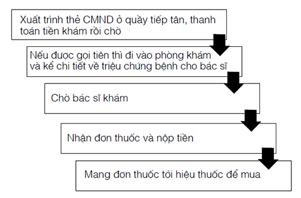

Hơi thở của con sói có mùi thịt thối rữa dính trong kẽ răng, mắt của nó cũng có màu vàng như mắt gã Goyl. Jacob đã nghe kể về đàn sói của vùng này. Có lẽ chúng thậm chí còn xộc vào tận giường và phòng khách để lôi những nạn nhân của mình ra. Gì cũng được - Jacob biết rồi sẽ là một đống lộn xộn. Có lẽ cuối cùng thì chết chìm không phải là một cách tồi để chết.
Giờ thì có năm con đang đi vòng quanh anh. Anh cố rút một tay ra để với lấy con dao, nhưng đám dây leo siết cổ không ngừng khoan sâu những gai nhọn vào da thịt anh đến nỗi nỗi đau đớn kéo dài thành một tiếng thét bị kìm nén.
Gào lên, Jacob. Tại sao không? Có lẽ Cáo sẽ nghe thấy mi. Không. Hẳn là cô ấy đang chờ ở Gargantur rồi. Cô sẽ làm gì nếu anh không đến? Đi tìm anh, như gã Goyl đã nói, nhưng chắc chắn không phải cả phần đời còn lại của cô. Cáo sẽ nhanh chóng tìm ra chuyện gì đã xảy đến với anh. Đó gần như một suy nghĩ mang tính an ủi.
Một con sói trong bầy liếm mặt anh, như thể nó muốn nếm thử mùi vị. Jacob cố ít nhất rút được một chân ra để có thể đá nó, nhưng đám gai càng cắm sâu hơn vào da thịt anh. Mẹ kiếp, Jacob, nghĩ gì đó đi!
Chúng đứng yên.
Con lớn nhất liếm cái mõm xám.
Màn dạo đầu đã kết thúc.
Jacob quăng mình qua một bên. Anh nghe tiếng răng đớp trong không khí. Con tiếp theo cắn vào những thân leo, nhưng chúng không thể bảo vệ anh được lâu. Jacob cố tuyệt vọng nhớ lại tất cả những gì anh biết về dây leo siết cổ. Anh đã từng sử dụng chúng để giữ chân những kẻ bám đuôi, nhưng chưa bao giờ dùng để bắt họ. Một con sói cắn vào đám thân leo siết quanh ngực anh. Một con khác đang cấu xé dây leo quanh chân anh.
Dây leo siết cổ, Jacob! Làm sao ngươi có thể quên chứ! Chúng thích gì nhất nào?
Anh quăng mình lần nữa, bất kể nó làm anh đau đớn bao nhiêu, và lăn lộn trên nền đất rừng. Bầy sói giận dữ tru lên rồi bỏ đi, trong khi những gai nhọn vẫn cắm vào da anh.
Máu. Thứ dây leo siết cổ ưa thích nhất. Nhưng dĩ nhiên máu cũng sẽ làm bầy sói điên cuồng hơn. Cú ngoạm tiếp theo nhất định sẽ tìm đến đúng da thịt anh. Jacob rú lên khi hàm răng của chúng ngoạm vào bên sườn anh, nhưng đám thân leo ngửi thấy mùi máu của anh và bắt đầu mọc nhanh hơn.
Những chồi non nhú lên hướng về phía bầy sói, cứng cáp dần lên trong lúc vẫn tiếp tục mọc ra. Chúng cào cấu bộ lông của bầy sói và bao bọc Jacob bằng một cái kén ngày một dày hơn. Anh cảm thấy khó thở, quần áo anh dính nhớp đầy máu, nhưng bầy sói không thể động vào anh được nữa. Chúng tru lên giận dữ và ngoạm liên hồi vào đám cành nhánh đầy gai, dù những thân leo giờ đây đang mọc lên xung quanh chúng. Jacob cố sức thở. Ngón tay anh chạm đến cán dao, nhưng anh không thể di chuyển bàn tay để rút nó ra.
Con sói đầu đàn ngừng lại. Nó thở hổn hển trước cơn thèm khát thịt người ngon lành có mùi máu và mồ hôi đổ vì sợ hãi.
Rồi nó cắn vào những thân leo đang siết quanh cổ Jacob. Jacob tuyệt vọng cố xoay người lại, nhưng chính mở dây leo đang bảo vệ anh lại giữ chặt anh như con ruồi nằm gọn trong mạng nhện. Chỉ một cú ngoạm nữa thôi hơi thở của con sói sẽ quét trên làn da trần của anh. Jacob tưởng đã cảm thấy răng nanh trên cổ họng mình, và rồi...
Chẳng có gì xảy ra.
Không có sụn vỡ răng rắc. Không chết ngạt vì máu của chính mình. Thay vào đó là tiếng kêu ăng ẳng chói tai. Và giọng nói sắc nhọn của một người đàn ông.
Jacob trông thấy đôi ủng qua đám thân leo và lưỡi một thanh kiếm. Một con sói ngã xuống với cổ họng bị xẻ đôi, con thứ hai thoát ra khỏi mớ dây leo và tấn công, nhưng lưỡi kiếm vung lên trong không trung giết nó chết tươi. Những con khác lùi lại. Cuối cùng một con trong bầy tru lên một tiếng tuyệt vọng, chúng bỏ chạy, bộ lông dính đầy gai nhọn.
Vị cứu tinh của anh xoay người lại. Anh ta không lớn tuổi hơn Jacob là mấy. Thanh kiếm của anh cắt qua đám dây leo không chút khó khăn như con dao rọc thư cắt qua giấy. Không phải thanh kiếm nào cũng dễ dàng cắt được dây leo siết cổ như thế. Người lạ mặt nhổ gai bám trên găng tay trong lúc Jacob chui ra khỏi đám dây leo đã bị cắt vụn. Y phục của anh ta cũng chất lượng như lưỡi gươm của anh. Cổ áo khoác của anh được viền bằng lông cáo đen. Ở Lothringen chỉ có giới quý tộc cấp cao mới được phép săn loài thú này.
Hoàng tử trong truyện cổ tích. Anh trông giống như thế.
Tuyệt. Hãy mừng là anh ta không bận đi cứu Bạch Tuyết, Jacob . Lần cuối Jacob cảm thấy ngu ngốc thế này là trên sân trường, khi thầy giáo phải cứu anh thoát khỏi tay một con bé nữ sinh đang cố siết cổ anh.
“Dây leo siết cổ khá hiếm thấy ở vùng này.” Vị ân nhân kéo anh đứng dậy. “Lũ sói có cắn anh không?”
Cảm ơn anh ta đi, Jacob. Nào.
“Không tệ đến thế.” Anh sờ vết thương bên sườn. “Làm thế nào anh đánh đuổi được chúng nhanh thế?” Dừng ngay. Ngươi nói nghe như thể anh ta là người đã dắt lũ sói tới . Lòng kiêu hãnh là một thứ phiền nhiễu. Nhưng vị cứu tinh của anh chỉ nhún vai.
“Điền trang của tôi nằm gần Champlitte. Ở đó chúng tôi từng gặp rắc rối với đám thú dữ còn to hơn thế này nhiều.” Anh ta chìa tay về phía Jacob. “Guy de Troisclerq.”
Jacob chùi máu dính trên tay. “Jacob Reckless.” Thợ săn kho báu, một tên đại ngốc. Anh khó lòng đứng vững trên đôi chân mình.
Troisclerq chỉ bộ quần áo rách rưới của anh. “Anh phải tắm bằng nước nấu từ vỏ cây, nếu không vết thương sẽ viêm tấy lên mất. Mấy cái gai này rất nguy hiểm.”
“Tôi biết.” Jacob!
Anh cố ép mình nở một nụ cười. “Có vẻ như anh đã cứu mạng tôi.”
Troisclerq quẳng mớ dây leo bị chặt nhỏ vào giữa khoảnh đất trống. “Tôi đã có mặt đúng lúc ở đúng chỗ. Tất cả chỉ có thế.”
Anh ta cũng là quý tộc. Ngừng lại đi, Jacob! Làm thế nào đó lại là lỗi của anh ta, khi ngươi để mình rơi vào bẫy của gã Goyl như một tên nghiệp dư thế kia?
Cái bật lửa Troisclerq đưa lại chỗ mở dây leo là một trong những cái đầu tiên Jacob thấy ở thế giới sau gương. Nó đáng giá cả một gia tài. Anh gỡ một nhánh cây ra khỏi tóc và quẳng nó vào đống lửa. Anh vẫn còn sống, nhưng cái thủ cấp đã mất.
Vết cắn bên sườn đau dữ dội đến nỗi anh phải nhờ Troisclerq mang ngựa lại giúp. Nhìn cái ba lô bị cướp sạch anh giận dữ một cách tuyệt vọng, đến nỗi muốn ngay lập tức đuổi theo gã người lai. Nhưng vị cứu tinh quý tộc của anh nói đúng - anh phải chữa lành vết thương và sát trùng làn da bị gai nhọn đâm lỗ chỗ, nếu không anh sẽ bị nhiễm trùng máu. Thêm nữa, Cáo đang đợi anh ở Gargantua.
Ít nhất anh cũng leo được lên yên ngựa mà không cần Troisclerq phải giúp. Con bạch mã vị cứu tinh của anh cưỡi khiến tất cả ngựa mà Jacob từng sở hữu trông như lũ ngựa già gầy trơ xương.
“Anh đi về hướng nào?”
"Gargantua."
“Hay quá. Tôi cũng đang đến đó. Từ đó tôi sẽ đón chuyến xe ngựa đêm đi Vena.”
Tuyệt vời. Đó cũng chính xác là điều anh dự định làm. Hy vọng ân nhân của anh sẽ không kể cho những hành khách đi cùng họ đã gặp nhau như thế nào. Trái tim ở phương Đông. Anh phải tìm ra nó trước gã lai, bằng không tốt hơn hết anh nên để lũ sói thưởng thức bữa đại tiệc của chúng.
Jacob nhìn lần cuối khoảnh rừng trống mà gã Goyl đã bẫy anh như bẫy một con thỏ. Đường về Austrien còn rất xa và khuôn mặt của Troisclerq sẽ còn nhắc nhở anh trên cả chặng đường dài ấy về sự ngu ngốc của mình.
“Reckless?” Troisclerq cưỡi con bạch mã đi bên cạnh anh. “Anh có phải là tay thợ săn kho báu làm việc cho nữ hoàng xứ Austrien không?”
Jacob nắm chặt những ngón tay gai đâm lỗ chỗ quanh dây cương. “Chính là tôi.”
Cũng là tên ngốc để bị cướp như một kẻ bất tài vô dụng.